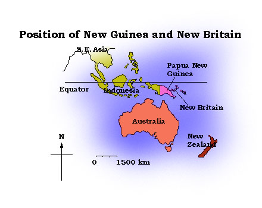

Back to Nakanai '93 Contents Page
Back to Nakanai '93 Contents Page
About 35 million years ago, as the Australian continent drifted northwards having split off from the great southern super-continent of Gondwanaland, it collided with the edge of the Pacific tectonic plate. The leading edge of Australia rode up on top of the ocean floor and then the resulting tangle, with all its accompanying volcanic action, was responsible for the creation of numerous islands. The Asian plate also became involved and the result is that hundreds of islands are crowded into the gap between Australia and India and spill out east into the Pacific.
The largest of the islands is New Guinea, just off the north coast of Australia. The western half of New Guinea (Irian Jaya) is a province of Indonesia, a huge nation encompassing most of the islands between N. W. Australia and S.E. Asia. The eastern half of New Guinea and a number of islands to its east make up Papua New Guinea (PNG). The largest of Papua New Guinea's off-shore islands is New Britain which lies 80 km off the northeast shore of the mainland, between 4 and 7 degrees south of the equator. Just to the north of New Britain is New Ireland and these two, together with a scattering of other islands such as the Admiralties and St Matthias Islands, make up the Bismarck Archipelago.
New Guinea and its surrounding islands lie at a crossroads of life between Asia, Australia and the Pacific. Animals and plants have invaded from all directions and once here have evolved in their own unusual ways. The result is islands teeming with an extraordinary diversity of animals and plants, many of which are strange and unique. The flora is largely Asiatic in origin, although many Australian genera are also represented. In contrast, the natural mammals are all marsupials, but quite unlike their Australian counterparts; in jungle-clad New Guinea the kangaroos have evolved to fill the arboreal niche of monkeys. The avifauna is a real mixture, with many of both Asian and Australian families represented. A number of bird families probably have their ancestral origins, and certainly reach their greatest evolutionary development, in New Guinea, for example Kingfishers, pigeons and doves, parrots and their allies, and birds of paradise.
A very high proportion of the bird species found in the area are endemic and on the offshore islands many birds have differentiated into new species unique to one or a few islands.

New Britain is the largest of Papua New Guinea's offshore islands with an area of 39,807 square km and a population of 255,000. It is a long, narrow mountainous island, nearly 600 km end to end but only 80 km across at its widest point. There is a central mountainous spine consisting of the western Whiteman range and the eastern Nakanai range. The jagged Nakanai mountain range is approximately 130 km long, covering much of the island between Bialla and the Gazelle Peninsula. The climate is typically tropical; warm, wet and humid. Annual rainfall varies widely around the island - from 3000 mm in Rabaul to 8500 mm in Pomio. Rainforest dominates the island but much of the north coast between Kimbe and Rabaul (the island's provincial capitals and main centres of habitation) has been cleared for palm and coconut plantations, made profitable by the highly fertile volcanic soil. Much of the remaining lowland forest has been, and is being, logged for timber.
Nearly 200 species of birds have been recorded on New Britain (See Coates 1985 & 1990). Over a quarter of these are strictly coastal or sea birds, many others are restricted in range to the lowlands and a number are irregular vagrants. However, well over a hundred different species of birds live in the hills and mountains of New Britain.
New Britain's hill and mountain birds have a number of different origins. When the islands of the Bismarck archipelago were first lifted above the sea and cloaked in rain forest, they were colonised by many bird species, the vast majority from mainland New Guinea. New Britain is separated from New Guinea by the deep Vitiaz Strait; thus the two islands have never been connected by a land bridge. Consequently, colonising birds have had to cross a stretch of sea water, a barrier that has probably prevented many would-be colonists from reaching New Britain.
Of those species that have successfully colonised, some have remained as isolated, or island, populations of the mainland species: They do not differ significantly from mainland individuals of the same species. Many others have diverged from the mainland populations to become new sub-species (races), or even new species. Many of these new forms are very similar to their mainland counterparts, they have just been slightly modified for life on New Britain; others have evolved completely new ways of life, filling niches that are filled by totally unrelated species on the mainland. Some of the new species have spread to nearby islands to fill the same vacant niches. Others have remained confined to their island of origin (there are 12 endemics on New Britain). However, all have a limited geographic distribution and are therefore restricted-range (r-r) species. In this study the designation of r-r species follows Birdlife International's work, see Bibby, Collar et al (1992) & Stattersfield et al (in prep)
There are 43 restricted-range species on New Britain. Only 3 of these are restricted to the lowlands and these are present on a number of other islands too. Of the 43 r-r species, a number are considered by Birdlife International to be of threatened or near-threatened status and are to be found in "Birds to Watch 2: The World List of Threatened Birds" (Collar et al 1994). For more details see the list "The Birds of New Britain".